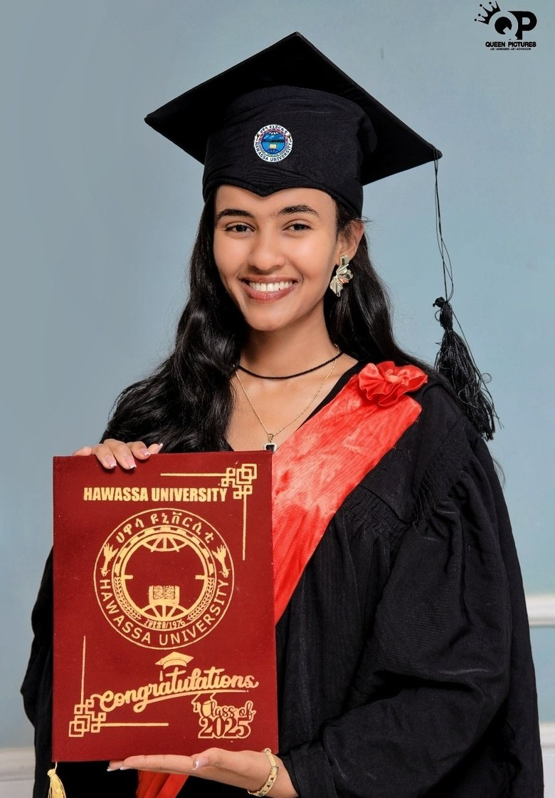
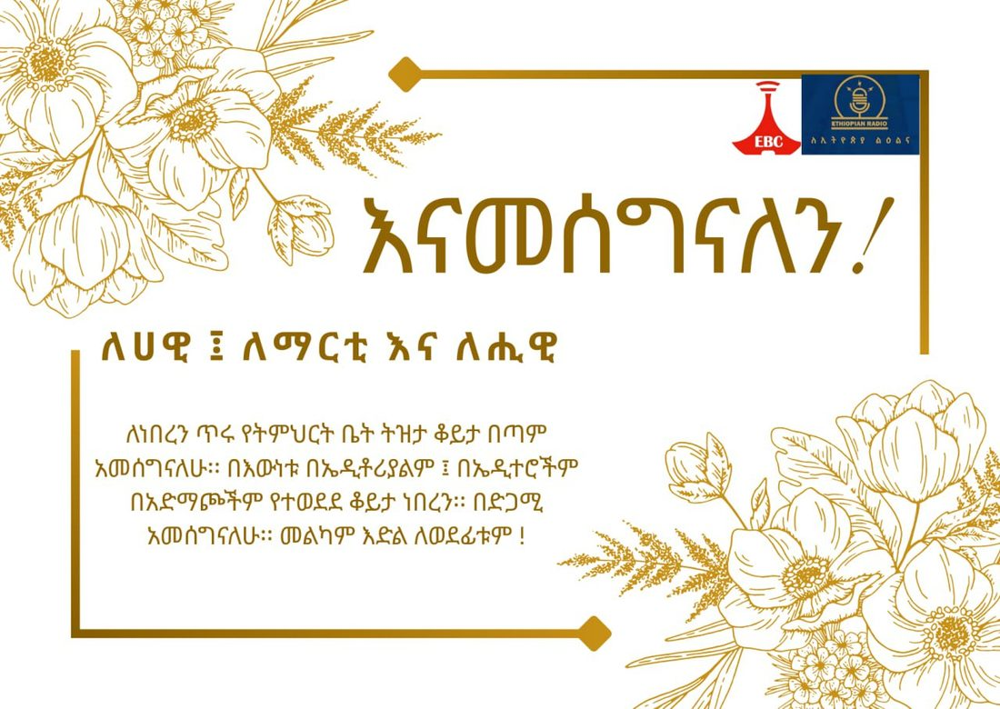
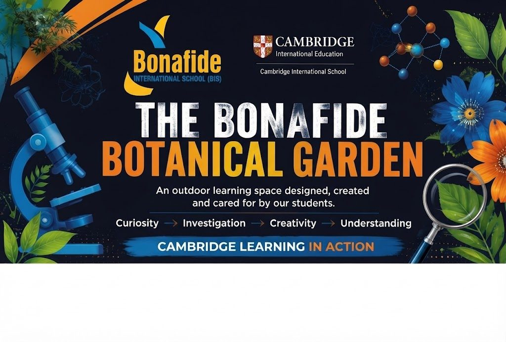
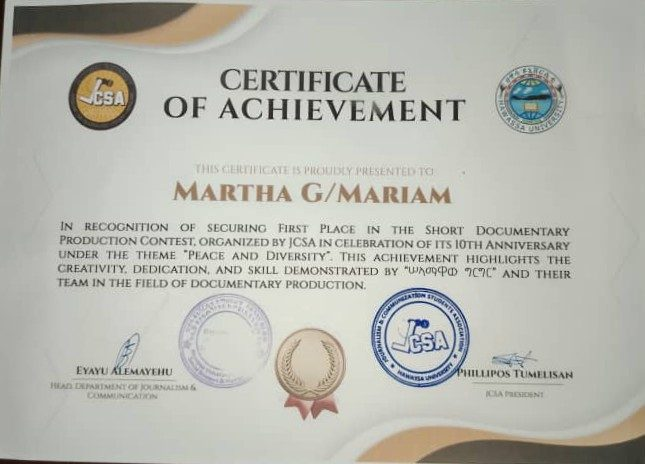
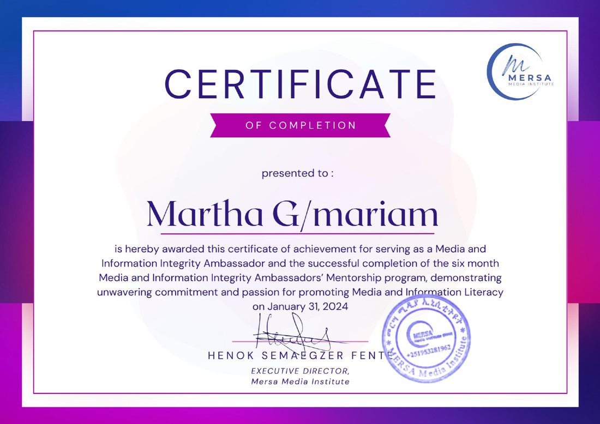
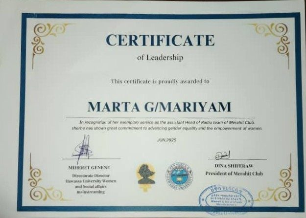
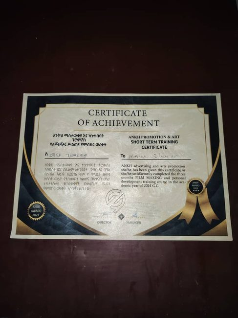

01 / Story
Journalism & documentary
Interviews, research, translation, scripting, and documentary storytelling focused on people and place.
I’m Martha G. Mariyam, a journalist and communications creative working across radio, documentary storytelling, community engagement, and visual communication.

My work brings together reporting, production, and communication. I’ve contributed to radio programming, supported media literacy, and created visual materials for schools, businesses, and events. I care about clear storytelling that reflects the people and communities behind it.
Interviews, research, translation, scripting, and documentary storytelling focused on people and place.
Weekly program production, hosting, community interviews, and health awareness broadcasts.
Social media content, event promotion, campaign visuals, and practical communication design.
A selection of documentary, broadcast, and design work from the materials provided.
A documentary drama set in Merkato, exploring peaceful coexistence across religious, ethnic, and language communities. The JCSA short documentary contest award recognized the theme “Peace and Diversity.”

Weekly program production and hosting, with community-focused interviews and broadcasts. Listen to program recordings on the radio samples page.

Promotional designs for school events, campaigns, and community activities, including a botanical garden banner.
Martha translated a BBC News frontline report on the Ukraine war.
Watch source documentary on YouTube ↗Journalism education, broadcasting, communications, and community engagement have shaped my approach to storytelling.
Journalism and communication studies, completed in 2025.
Produced and hosted a weekly program, conducted interviews, and delivered community-focused broadcasts.
Promoted media and information literacy through training and community awareness.
Hosted health-related broadcasts and supported digital outreach.
Develops marketing content, manages digital platforms, promotes events, and creates visual materials.
Certificates and recognition connected to journalism, community leadership, and creative media.

First place · JCSA short documentary contest

Media & Information Integrity Ambassador · Mersa Media Institute

Radio team leadership · Merahit Club
Law and community training

Film-making training · Ankh Academy
I’m open to opportunities in journalism, broadcasting, documentary production, social media, and creative communications.